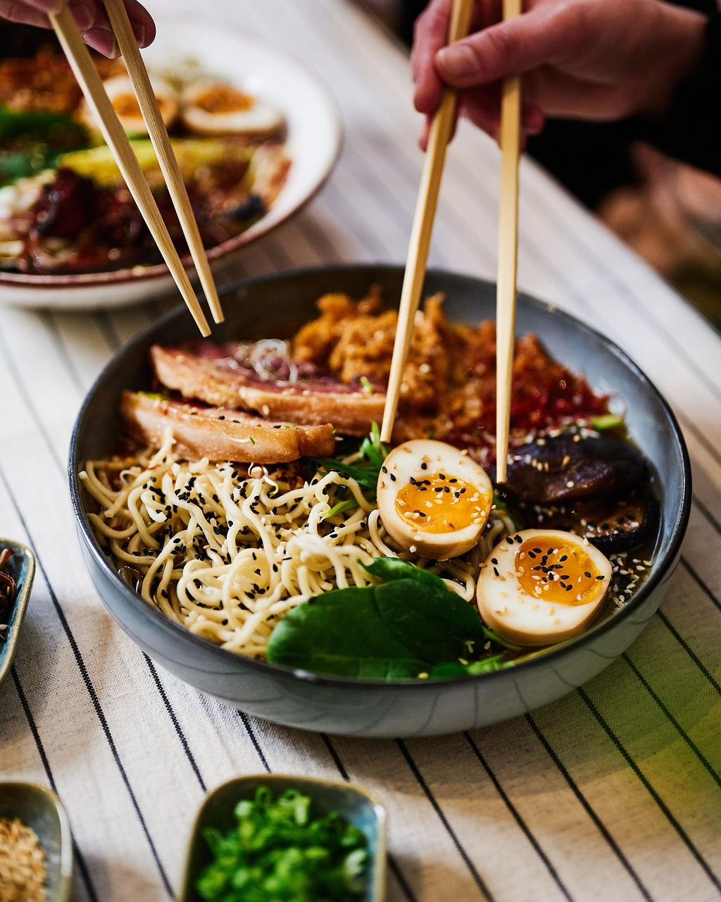
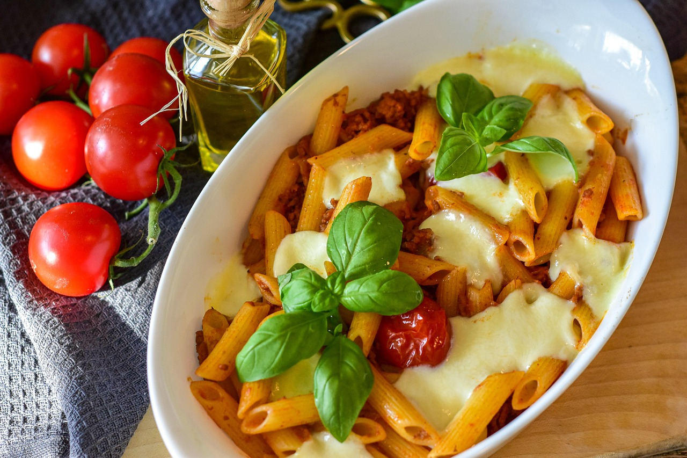

Cultural Origins of Our Dishes
Every dish at Savor the Globe tells a story. Discover the roots of our favorite meals and the traditions that inspired them.

Japanese Ramen
A soul-warming noodle soup that began in post-war Japan and evolved into a global favorite.

Italian Pasta
A beloved symbol of Italian cuisine, pasta reflects simplicity, family, and centuries of tradition.

American Prime Ribs
A classic centerpiece of American steakhouses, prime rib is known for its tenderness and bold flavor, often reserved for special occasions.